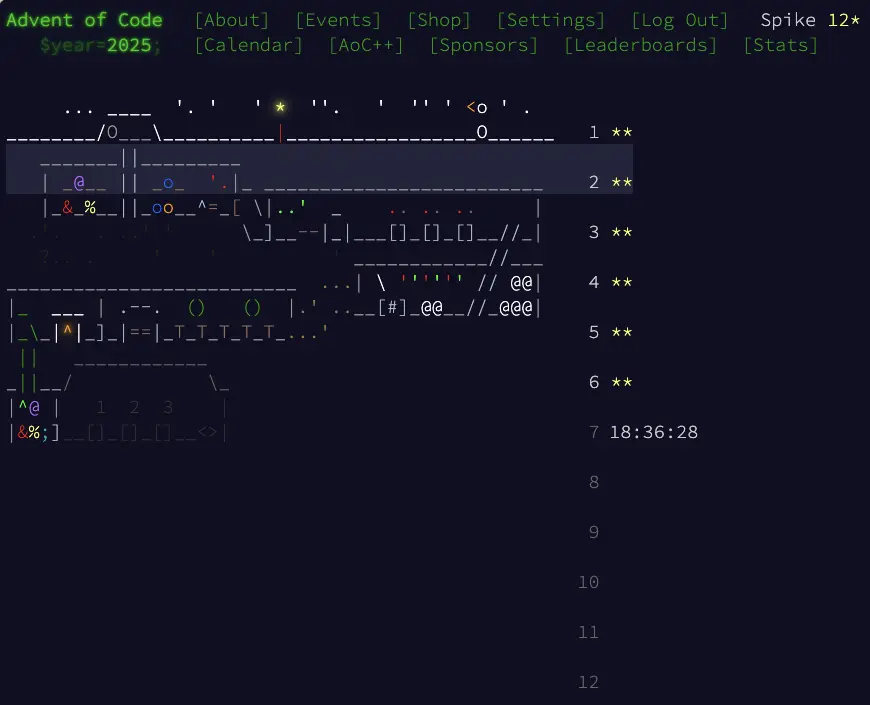
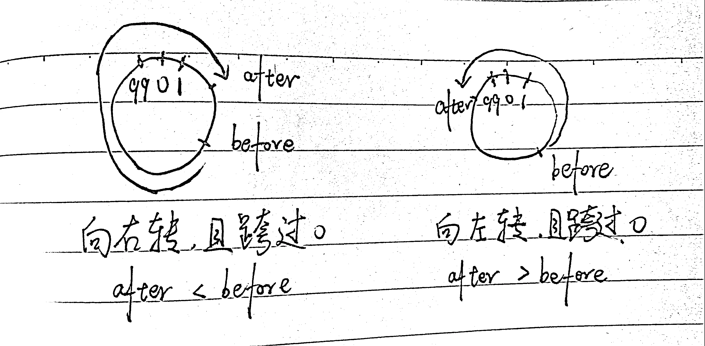

Advent of Code 2025 day1 ~ day6
{kind=link}

day1
day1 的谜题是有一个密码箱，密码箱上有一个转盘，转盘的刻度范围是 0 ～ 99，当前指向的刻度是 50。
输入是向左或向右转动的圈数：
L68 L30 R48 L5 R60 L55 L1 L99 R14 L82
part1 的问题是，按照输入转动后，有多少次刻度停在了 0 的位置。
解决思路也很简单，遍历每一行，如果是 Rxx 则向右转动，增加当前刻度的值；如果是 Lxx 则向左转动，减少当前刻度的值。
每次转动后，判断一下是否处于刻度 0 的位置，如果是，则累计次数。
判断方法是计算转动后的刻度值，看看刻度值是否可以整除 100，如果可以，说明刻度位于 0 的位置。
需要注意的是，向左转动后，需要还原实际的刻度值。例如当前刻度是 50 ，执行 L68 之后，计算得到 50 - 68 = -18，实际位置是 100 - 18 = 82。
part2 的问题是，按照输入转动后，有多少次刻度经过了 0 的位置。
依然是遍历每一行，计算转动后的数值，例如当前刻度是 50，执行 R501，得到 50 + 501 = 551。
因为是转盘是一个圆，只要转动完整一圈，一定是会经过 0 的，因此可以先求商，看看包含了多少圈，一圈是 100，551 / 100 = 5.51，即包含了 5 圈，至少经过了 5 次刻度 0。
还需要判断一下转动前的刻度（记为 before）和转动后的刻度（记为 after）之间的关系，判断是否跨过了刻度 0。
可以尝试在图上画一下看看，容易找到他们之间的关系。
{kind=link}

如果是向右转动，且转动后跨过刻度 0，那么 after 一定是小于 before 的。
如果是向左转动，且转动后跨过刻度 0，那么 after 一定是大于 after 的。
具体代码见：day1/solution.py
day2
day2 的输入是：
11-22,95-115,998-1012,1188511880-1188511890,222220-222224, 1698522-1698528,446443-446449,38593856-38593862,565653-565659, 824824821-824824827,2121212118-2121212124
其中 11-22 是一个范围，表示 11,12,…,21,22 的 ID，其它也是如此。
part1 的问题是，形如 11，22，123123 这样存在 2 次重复的 ID 是无效 ID，统计这些无效 ID 的数量。
思路也很简单，对每一个范围内的 ID 进行遍历，从中间截取 ID 前面和后面的部分，比较一下是不是一样的就好了。
part2 的问题是，除了 11，22，像 999，565656，2121212121 这样的重复了 2 次或以上的 ID 也是无效 ID，统计无效 ID 的数量。
我的解法比较直接，就是穷举。
对任意 ID，从 1 个重复数字开始穷举，判断是否为无效 ID，穷举到数字长度的一半就可以停了，因为一旦超过一半，就无法重复了。
例如对 2121212121，我先判断 2 有没有一直重复、再判断 21 是否重复、再判断 212 是否重复……，最多到 21212 就可以停止了。实际上，21 已经发现是重复了，就可以停止遍历了。
Yordi Verkroost 在 Advent of Code 2025 - Day 2 分享了更巧妙的办法，可以看看。
具体代码见：day2/solution.py
day3
day3 的输入是：
987654321111111 811111111111119 234234234234278 818181911112111
每一行代表一组电池。
part 1 的问题是，你可以选择一组电池中的任意 2 个数字组成电压，并且使得这组电池的电压最大。
例如 811111111111119，可以开启 8 和 9，得到 89 的电压。
数字的组合是有顺序的，811111111111119 不可以得到 98 的电压值。
所以实际问题就是从一组数字里，找两个数字，组成最大的两位数。
思路是先找一个最大的数字当十位数，然后在这个数字后面，再找一个最大的数字作为个位数。
我的做法是先对一组数字降序排序，811111111111119 -> 981111111111111, 这样第一个数字就是这组数字里最大的，第二个数字就是第二大的。
同时，查询这两个数字的原始下标。
判断第一个数字的下标是不是在最后，如果它在最后，那它就不能作为十位数，因为它后面没有数字可以作为个位数了。所以如果它不在最后，则用它作为十位数；如果它在最后，则用第二大的数字作为十位数。
个位数则从十位数的下标往后截取数字、降序排序、取第一个即可。
part1 是任意找 2 个数字组成电压，part2 是任意找 12 个数字组成电压，找 12 个数字的逻辑和找 2 个数字的逻辑是一样的。
对于 12 个数字，先找一个最大的作为第 12 位，然后从剩下的数字里找 11 个数字；找到第 11 位数字，再从剩下的数字里找 10 个数字；以此类推，最后就会变成从一组数字里，找 2 个数字。
把找 12 个数字的问题，逐渐拆成找 2 个数字的问题，使用一个递归就可以完成了。
具体代码见：day3/solution.py
day4
day4 的输入：
..@@.@@@@. @@@.@.@.@@ @@@@@.@.@@ @.@@@@..@. @@.@@@@.@@ .@@@@@@@.@ .@.@.@.@@@ @.@@@.@@@@ .@@@@@@@@. @.@.@@@.@.
@ 对应这个位置有一堆纸， . 对应这个位置是一块空地。
当一个位置周围（上下左右对角线共 8 个位置）少于 4 卷纸（4 个 @ ）的时候，这个位置的纸堆（ @ ）就是可以被清理的。
例如上面的输入被清理之后会变成这样：
..xx.xx@x. x@@.@.@.@@ @@@@@.x.@@ @.@@@@..@. x@.@@@@.@x .@@@@@@@.@ .@.@.@.@@@ x.@@@.@@@@ .@@@@@@@@. x.x.@@@.x.
其中 x 就是可以被清理的位置。
part1 的问题是，有多少个这样的位置？
思路也很简单，遍历每一个位置，然后检查位置周围 8 个方向 @ 的总数，如果总数小于 4 就进行统计即可。
对 python 不熟，在 JS 里 list[-1][-1] 是会越界的，但在 python 里，表达的却是倒数第一行倒数第一列的意思。
过程中也碰到了很多类似的情况，在认知偏差里学习。
part2 的问题是，当 @ 被清理之后，可以继续清理，直到没有可清理的 @ ，统计最终你可以清理的 @ 的数量。
解法也很简单，在 part1 的基础上，将清理过的 @ 标记为 . ，得到一个新的列表，对这个列表不断重复操作，直到无法标记为止，最后统计数量就好。
应该存在一些方法，可以提高搜索的效率，例如当一个外围全部都变成了 . 的时候，那么这个外围就没必要再搜索了，可以将搜索的范围缩减一些。
具体代码见：day4/solution.py
day5
day5 输入是：
3-5 10-14 16-20 12-18 1 5 8 11 17 32
空行上面的部分是一个 ID 范围（范围有重叠），下面的部分是 ID。如果 ID 落在了范围内，则这个 ID 是有效的。
例如：
1 不在任何范围内，是一个无效 ID；
5 在 3-5 这个范围内，是一个有效的 ID。
part1 的问题是，列出的 ID 中，有多少个是有效的？
最简单的做法应该是遍历所有 ID，遍历所有范围，判断 ID 在不在范围中。
不过因为范围存在重叠，将重叠的范围合并一下，可以减少需要遍历的范围数量，提高效率。
如果将上面的范围合并，需要搜索的范围就从：
3-5 10-14 16-20 12-18
变成了：
3-5 10-20
需要搜索的范围就会大幅减少。
通过观察发现，范围的起始值是顺序递增的，所以在判断 ID 落在什么范围的时候，也可考虑用二分搜索，快速定位到可能的范围区间，再做判断，也能提高一些执行效率。
part2 的问题是，范围内的 ID 都是有效的，那么所有的这些范围区间里，包含多少个有效 ID？
如果在 part1 完成了区间合并，part2 就很简单，就是遍历所有合并后的区间，累计每个区间的 ID 数量即可。
具体代码见：day5/solution.py
day6
day6 输入（注意对齐和空格）：
123 328 51 64 45 64 387 23 6 98 215 314 * + * +
part1 是做数学题，每一列数字是一个算式，累计所有算式的和。
例如第一列的值是 123 * 45 * 6 = 33210。
part1 蛮简单的，就是遍历每一列，按照运算符号计算，最后求和就行。
part2 的变化是数字以从右到左的列式书写。每个数字都写在自己的列中，最高位数字在顶部，最低位数字在底部。
例如第一列的数字不是 [123,45,6]，而是变成了 [356, 24, 1]，运算符不变，最后的结果是 356 * 24 * 1 = 8544。
难点就是如何从数据里解析出用于运算的数字，我观察了一下发现，对任意一列从上往下组合，如果是有数字的，就可以组合成一个数字；如果是全都是空格，那么最后组合出来的也是一个空格。
所以我就遍历每一列，从上往下组合字符，当组合出来的是数字，我就存起来；当组合出来是空格，说明某一组的数字我已经都处理完了，就进行运算。因为最后一列右边是没有空格的，我在处理前还特意补了一列空格在最右边，方便遍历。
解决了如何获取运算数字的问题，剩下就是运算一下就好了。
具体代码见：day6/solution.py
这一年刚开始的几个谜题还蛮简单的，对于执行时间、空间大小也没有太多要求，也蛮有趣，适合用来学习新语言。